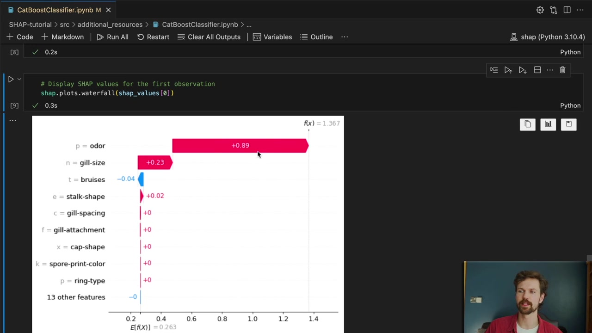
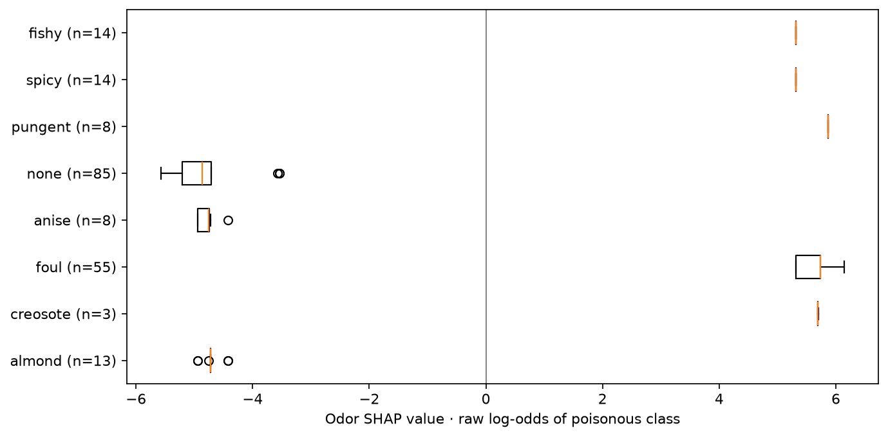

Explain Categorical Features Without Losing Their Meaning
Companion to A Data Odyssey’s video · Conor O’Sullivan
Earlier in our Abalone regression, a single biological attribute—sex—entered the model as three separate indicator columns: Sex_F, Sex_I, and Sex_M. Because the model sees three numerical columns, a standard SHAP explainer returns three separate attributions. A human reader, however, asks a single question: how much did the abalone’s sex contribute to this prediction?
That tension becomes acute on high-cardinality tabular data like the UCI Mushroom dataset, where 22 categorical attributes (odor, cap shape, gill color, habitat, and so on) expand into more than 110 one-hot indicator columns. Worse, practitioners frequently drop inactive ($0$-valued) indicators from waterfall charts—quietly breaking additive efficiency and throwing away the largest attribution terms.
Why an inactive ($0$) indicator carries a large SHAP value
Let $C$ be a categorical feature with $K$ mutually exclusive levels $\{c_1, \dots, c_K\}$, represented by one-hot indicator columns $I_1, \dots, I_K \in \{0, 1\}$ satisfying $\sum_{k=1}^{K} I_k(x) = 1$ on every valid observation $x$. Let $\phi_{I_k}$ denote the SHAP attribution assigned to indicator column $I_k$ for a specific prediction $f(x)$, let $\phi_0$ be the baseline expectation, and let $\phi_j$ denote the attributions of all remaining non-$C$ features $j \notin C$.
Suppose odor takes three levels—almond ($I_A$), foul ($I_F$), and none ($I_N$)—and we explain an almond-scented mushroom encoded as $(I_A, I_F, I_N) = (1, 0, 0)$. Why is $\phi_{I_F}$ non-zero even though $I_F = 0$? Because SHAP compares the explained row against reference mushrooms in the background dataset. Whenever a background mushroom has $I_F = 1$ (foul odor strongly predicts poisonous), learning that our mushroom has $I_F = 0$ (“not foul”) sharply lowers the predicted log-odds relative to the baseline! Discarding $0$-valued indicators hides that evidence.
To summarize an already-computed one-hot explanation into one number per original feature, sum all $K$ indicator attributions belonging to $C$. Defining the post-hoc summed attribution $\phi_C^{\text{sum}}$:
Because addition is associative, grouping indicator columns after computing SHAP preserves exact local efficiency:
odor_columns = [
j for j, name in enumerate(encoded_rows.columns)
if name.startswith("odor_")
]
odor_contribution = encoded_explanation.values[:, odor_columns].sum(axis=1)Post-hoc one-hot summation vs atomic categorical coalitions
Summing $\phi_{I_1} + \dots + \phi_{I_K}$ after an expanded one-hot run is convenient, but it does not generally equal the Shapley value $\phi_C^{\text{atomic}}$ computed when $C$ enters coalitions as a single indivisible player. In the expanded $4$-player game, coalition masking reveals $I_A$ without revealing $I_F$, creating impossible hybrid chimera rows such as $(I_A=1, I_F=1, I_N=0)$ (“both almond and foul simultaneously”) when $I_A=1$ comes from the foreground row and $I_F=1$ is spliced in from a foul background mushroom!
I_F == 1 first, distorting how interaction credit is shared with Bruises.Let us verify this difference with exact numbers on a 4-mushroom background dataset and a tiny decision tree outputting raw log-odds:
- Tree rule $f(I_A, I_F, I_N, B)$: if $I_F = 1$, return $+4.0$ (foul $\Rightarrow$ poisonous); else if $I_A = 1$ and bruises $B = 1$, return $-4.0$ (almond with bruises $\Rightarrow$ strongly edible); else return $0.0$.
- Four background mushrooms: $z^{(1)} = (1,0,0,1)$ giving $-4.0$; $z^{(2)} = (0,1,0,0)$ giving $+4.0$; $z^{(3)} = (0,1,0,1)$ giving $+4.0$; $z^{(4)} = (0,0,1,0)$ giving $0.0$. Baseline expectation is $\phi_0 = \frac{-4 + 4 + 4 + 0}{4} = +1.0$.
- Explained mushroom $x$: almond odor with bruises, $x = (1, 0, 0, 1)$, where $f(x) = -4.0$. Total shift from baseline is $f(x) - \phi_0 = -5.0$ log-odds.
| Feature / Column | Observed value in $x$ | Expanded 4-player one-hot SHAP | Post-hoc summed one-hot SHAP | Atomic 2-player categorical SHAP |
|---|---|---|---|---|
odor_almond ($I_A$) |
$1$ (active) | $-4/3 \approx -1.3333$ | $-25/6 \approx -4.1667$ | $-4.0000$ |
odor_foul ($I_F$) |
$0$ (inactive!) | $-17/6 \approx -2.8333$ | ||
odor_none ($I_N$) |
$0$ (inactive) | $0.0000$ | ||
bruises ($B$) |
$1$ | $-5/6 \approx -0.8333$ | $-5/6 \approx -0.8333$ | $-1.0000$ |
| Total $\phi_0 + \sum \phi$ | — | $1.0 - 5.0 = -4.0000$ | $1.0 - 5.0 = -4.0000$ | $1.0 - 5.0 = -4.0000$ |
Two lessons jump right out of this table:
- The inactive column carries more than double the attribution of the active column! Because half the background mushrooms have $I_F = 1$, knowing $I_F = 0$ contributes $-17/6 \approx -2.8333$, whereas $I_A = 1$ contributes only $-4/3 \approx -1.3333$. Had you plotted only the active category
odor_almond = 1, you would have missed $-2.8333$ log-odds of odor’s effect. - Post-hoc summation ($-4.1667$) differs slightly from the atomic game ($-4.0000$): in the atomic 2-player game, knowing neither feature gives $+1.0$, knowing
Odor=almondalone gives $\frac{1}{2}(-4) + \frac{1}{2}(0) = -2.0$ (since $B=1$ on half the background), knowingBruises=1alone gives $\frac{1}{4}(-4)+\frac{2}{4}(+4)+\frac{1}{4}(0) = +1.0$, and knowing both gives $-4.0$—yielding $\phi_{\text{Odor}}^{\text{atomic}} = -4.0$ and $\phi_{\text{Bruises}}^{\text{atomic}} = -1.0$. In the expanded game, impossible $(I_A=1, I_F=1)$ hybrid states hit theI_F == 1root split first, shifting $-1/6$ of credit between odor and bruises.
CatBoost keeps the original input columns
When you train a model that natively handles categorical columns—such as CatBoost, LightGBM with categorical splits, or modern XGBoost with enable_categorical=True—the model splits directly on category subsets without manual one-hot expansion, and TreeExplainer returns one attribution per original feature.
On the UCI Mushroom dataset, class 1 denotes poisonous and class 0 denotes edible. (Needless to say, explaining a classifier on this benchmark is a statistical exercise, never a field guide for foraging wild mushrooms.)
from catboost import CatBoostClassifier
model = CatBoostClassifier(
iterations=160, depth=4, learning_rate=0.05,
loss_function="Logloss", random_seed=42,
thread_count=2, verbose=False, allow_writing_files=False,
)
model.fit(X_train, y_train, cat_features=list(X_train.columns))
explanation = shap.TreeExplainer(
model,
feature_perturbation="tree_path_dependent",
model_output="raw",
)(rows)Passing all 22 column names in cat_features produces an explanation array of shape (200, 22) rather than (200, 117). Its baseline and feature values sum exactly to CatBoost’s raw binary margin (RawFormulaVal, in log-odds of class 1). Notice also that missing or "?" entries in stalk-root are treated here as an explicit category string; in production pipelines, verify that training and inference encode missing categories identically.


odor = p (pungent) row entry with $+0.89$ log-odds instead of nine fragmented indicator bars. Frame from A Data Odyssey, 6:08, by Conor O’Sullivan. Select the image to view it at full size.Compare categories directly with grouped box plots
A standard numerical beeswarm colors points from blue (low) to red (high). Nominal categories such as pungent, almond, and anise have no natural numeric order—mapping them to arbitrary integers $0, 1, 2, \dots$ and applying a red-blue gradient creates a misleading visual hierarchy.
Instead, slice the single column $\phi_{\cdot,\text{odor}}$ by observed category label and plot one distribution (box plot + strip points + sample size $n_c$) per level against a dashed zero reference line:


Even within a single category such as none ($n=90$), rows do not all receive identical SHAP values: tree interactions with gill size, spore-print color, and bruises spread a single category’s attribution across a range. Always display category counts alongside box plots so a 2-row rare level is not given the same visual weight as a 90-row level.
A cleaner display does not make two models equivalent
Do not expect the grouped one-hot odor sum from an XGBoost model to match the native odor SHAP value from a CatBoost model: you are explaining two different learned functions with different split structures (one-vs-rest binary indicator splits versus CatBoost’s target-statistic combinations and oblivious trees). Select the model architecture based on out-of-sample predictive performance and operational constraints first; then choose the faithful explanation workflow for that model:
- Already-deployed one-hot pipeline: keep all $K$ indicators during SHAP computation and sum $\phi_C^{\text{sum}} = \sum_{k=1}^K \phi_{I_k}$ for display—never filter out $I_k = 0$ columns beforehand, or pass an explicit grouped masker in model-agnostic explainers when atomic coalitions are required.
- Native categorical tree model (CatBoost / LightGBM / XGBoost categorical): pass categorical columns directly so splits and TreeSHAP path weights operate on the original $p$ features from the start.
The complete reproduction script, recorded JSON diagnostics, and reproduced waterfall chart run end-to-end on the UCI Mushroom dataset (held-out accuracy $99.88\%$, exact margin additivity verified). In the final chapter of this series, we leave supervised labels behind and use SHAP to explain unsupervised Isolation Forest anomaly scores.